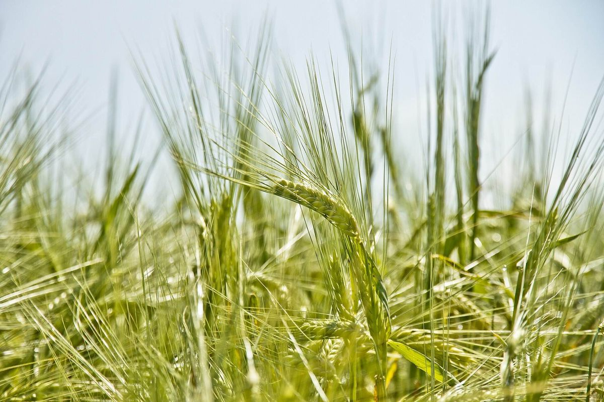
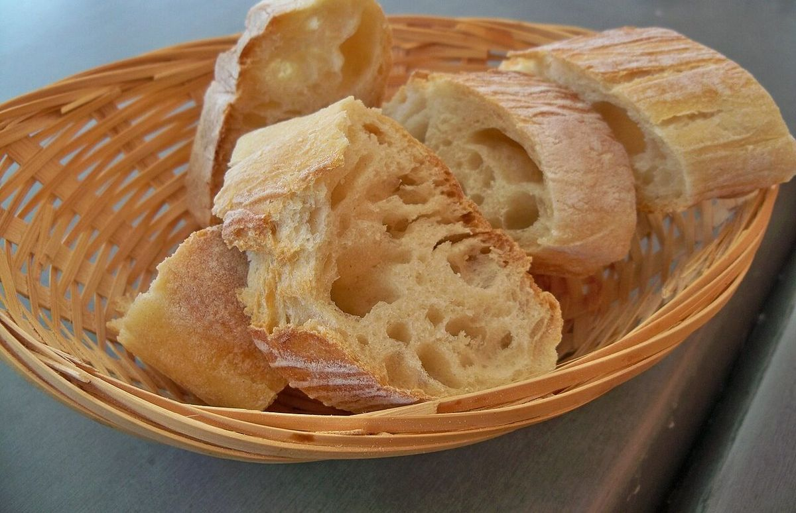

掲載している写真はフリー素材のイメージで、お店の実際の様子ではありません。日本国外や他の地域で撮影されたもの、撮影地が不明なものを含みます。
口コミ
以下は実際のお客様の声ではありません。サイトのイメージとして制作側が用意した例文です。
ご来店後の声は、お預かりできるようになりましたら掲載します。
- イメージ例
近くに、気軽に立ち寄れるパン屋さんがあったらいいなと思います。

- イメージ例
どんなパンが並んでいるのか、少しずつ知っていけたらいいなと思います。
- イメージ例
お店の情報が増えたら、見に来たいなと思います。
制作側の運用方針として、実際の声を載せるときは、お客様の許可を得たものだけにします。
電話する 055-922-0531